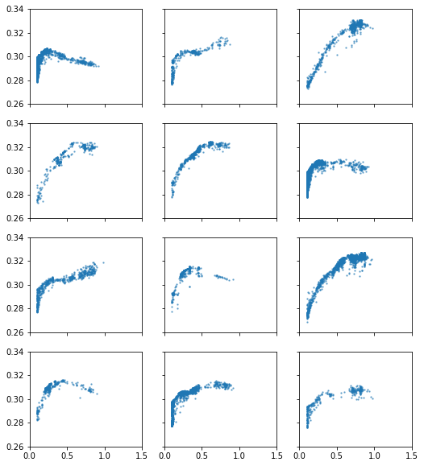
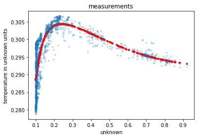

[42]:
# Core imports
import dcgpy
import pygmo as pg
import numpy as np
# Sympy is nice to have for basic symbolic manipulation.
from sympy import init_printing
from sympy.parsing.sympy_parser import *
init_printing()
# Plotting
%matplotlib inline
import matplotlib.pyplot as plt
# Pickling
import pickle as pk
[43]:
# Load the data
with open("data.pk", "rb") as f:
Xs,Ys = pk.load(f)
[44]:
# Visualize them
fig, axes = plt.subplots(nrows = 4, ncols=3, sharex=True, sharey=True, figsize=(8.5,10))
for i, ax in enumerate(np.reshape(axes,(12))[:12]):
ax.scatter(Xs[i], Ys[i], s=2.0, alpha=0.5)
ax.set_xlim(0, 1.5)
ax.set_ylim(0.26, 0.34)
[44]:
$\displaystyle \left( 0.26, \ 0.34\right)$

[4]:
# We define our kernel set, that is the mathematical operators we will
# want our final model to possibly contain.
ss = dcgpy.kernel_set_double(["sum", "diff", "mul", "div", "exp"])
[45]:
# Instantiate the symbolic regression optimization problem
# Note: we allow for three constants in the final expression
X = np.reshape(Xs[0], (len(Xs[0]),1))
Y = np.reshape(Ys[0], (len(Ys[0]),1))
udp = dcgpy.symbolic_regression(points = X, labels = Y, kernels=ss(), n_eph=3, rows =1, cols=16, levels_back=8, multi_objective=False)
print(udp)
Data dimension (points): 1
Data dimension (labels): 1
Data size: 1440
Kernels: [sum, diff, mul, div, exp]
Loss: MSE
[46]:
# We instantiate here the evolutionary strategy we want to use to search for models.
# In this case we use a single objective memetic algorithm.
uda = dcgpy.mes4cgp(gen = 2000, max_mut = 15)
[47]:
# The evolution will happen in parallel using an archipelago with no connections
archi = pg.archipelago(algo = uda, prob = udp, n = 8, pop_size=4)
archi.evolve(5)
[27]:
archi.wait()
with open("results.pk", "wb") as file:
pk.dump((archi), file)
[27]:
[array([2.53676988e-05]),
array([2.38481619e-05]),
array([2.38109105e-05]),
array([2.49418679e-05]),
array([2.38471303e-05]),
array([2.4257763e-05]),
array([2.40675458e-05]),
array([5.92793339e-05])]
[23]:
[39]:
# Lets have a look to the symbolic representation of our model (using sympy)
best = archi.get_champions_x()[2]
parse_expr(udp.prettier(best))
[39]:
$\displaystyle \left[ c_{1} x_{0}^{2} e^{- x_{0}^{2} - x_{0}} + \frac{c_{1} x_{0}^{2}}{x_{0}^{2} + x_{0}} + \frac{c_{2}}{x_{0}^{2}} - c_{3}\right]$
[40]:
# And lets see what our model actually predicts on the inputs
Y_pred = udp.predict(X, best)
[41]:
# Lets compare to the data
_ = plt.plot(X, Y_pred, 'r.')
_ = plt.plot(X, Y, '.', alpha=0.2)
_ = plt.title('measurements')
_ = plt.xlabel('unknown')
_ = plt.ylabel('temperature in unknown units')

[62]:
pop.champion_x[:3]
[62]:
array([-0.00532265, 0.15218634, 0.35571846])
[ ]: